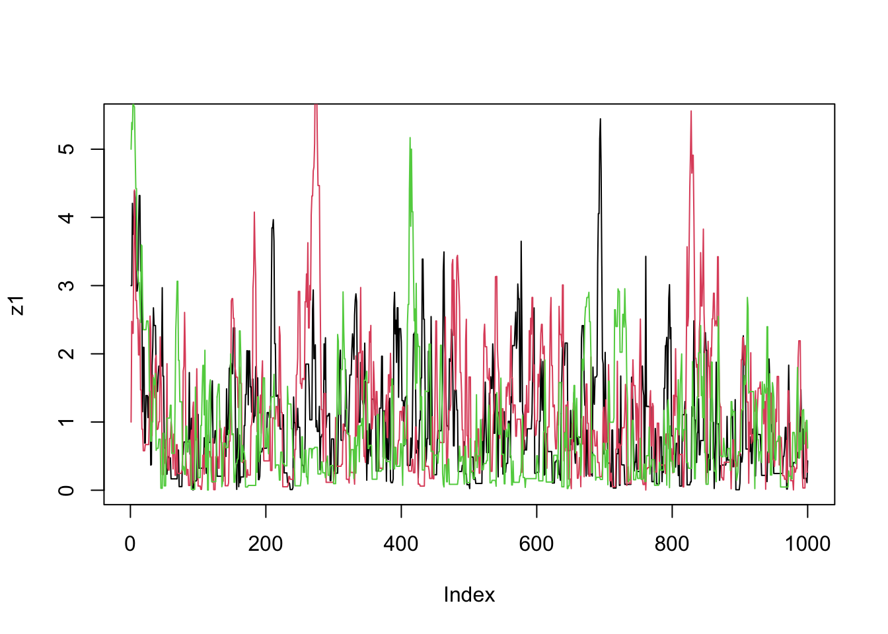
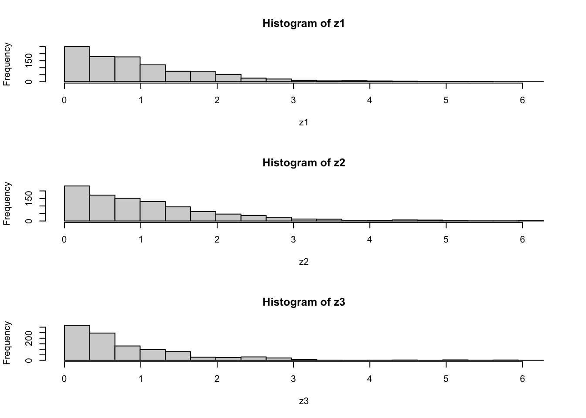
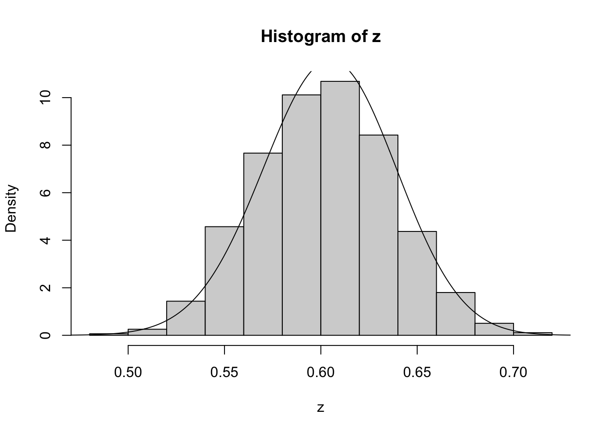
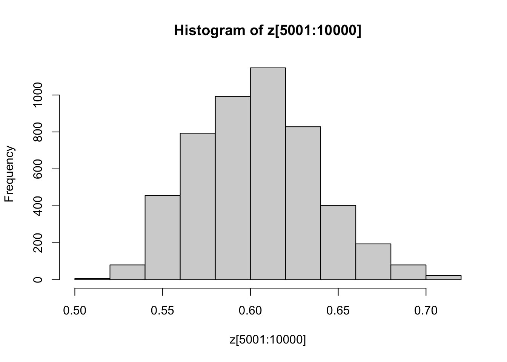

Simple Examples of Metropolis–Hastings Algorithm
Matthew Stephens
2017-01-24
Last updated: 2022-04-26
Checks: 7 0
Knit directory: fiveMinuteStats/analysis/
This reproducible R Markdown analysis was created with workflowr (version 1.7.0). The Checks tab describes the reproducibility checks that were applied when the results were created. The Past versions tab lists the development history.
Great! Since the R Markdown file has been committed to the Git repository, you know the exact version of the code that produced these results.
Great job! The global environment was empty. Objects defined in the global environment can affect the analysis in your R Markdown file in unknown ways. For reproduciblity it’s best to always run the code in an empty environment.
The command set.seed(12345) was run prior to running the code in the R Markdown file. Setting a seed ensures that any results that rely on randomness, e.g. subsampling or permutations, are reproducible.
Great job! Recording the operating system, R version, and package versions is critical for reproducibility.
Nice! There were no cached chunks for this analysis, so you can be confident that you successfully produced the results during this run.
Great job! Using relative paths to the files within your workflowr project makes it easier to run your code on other machines.
Great! You are using Git for version control. Tracking code development and connecting the code version to the results is critical for reproducibility.
The results in this page were generated with repository version 09da4d4. See the Past versions tab to see a history of the changes made to the R Markdown and HTML files.
Note that you need to be careful to ensure that all relevant files for the analysis have been committed to Git prior to generating the results (you can use wflow_publish or wflow_git_commit). workflowr only checks the R Markdown file, but you know if there are other scripts or data files that it depends on. Below is the status of the Git repository when the results were generated:
Ignored files:
Ignored: .Rhistory
Ignored: .Rproj.user/
Ignored: analysis/.Rhistory
Ignored: analysis/bernoulli_poisson_process_cache/
Ignored: data/
Untracked files:
Untracked: _workflowr.yml
Untracked: analysis/CI.Rmd
Untracked: analysis/gibbs_structure.Rmd
Untracked: analysis/libs/
Untracked: analysis/results.Rmd
Untracked: analysis/shiny/tester/
Untracked: analysis/stan_8schools.Rmd
Unstaged changes:
Modified: analysis/LR_and_BF.Rmd
Modified: analysis/MH_intro.Rmd
Deleted: analysis/r_simplemix_extended.Rmd
Note that any generated files, e.g. HTML, png, CSS, etc., are not included in this status report because it is ok for generated content to have uncommitted changes.
These are the previous versions of the repository in which changes were made to the R Markdown (analysis/MH-examples1.Rmd) and HTML (docs/MH-examples1.html) files. If you’ve configured a remote Git repository (see ?wflow_git_remote), click on the hyperlinks in the table below to view the files as they were in that past version.
| File | Version | Author | Date | Message |
|---|---|---|---|---|
| Rmd | 09da4d4 | Matthew Stephens | 2022-04-26 | workflowr::wflow_publish(“MH-examples1.Rmd”) |
| html | 1543692 | Matthew Stephens | 2022-04-26 | Build site. |
| Rmd | dadc549 | Matthew Stephens | 2022-04-26 | workflowr::wflow_publish(“MH-examples1.Rmd”) |
| html | 5f62ee6 | Matthew Stephens | 2019-03-31 | Build site. |
| Rmd | 0cd28bd | Matthew Stephens | 2019-03-31 | workflowr::wflow_publish(all = TRUE) |
| html | 34bcc51 | John Blischak | 2017-03-06 | Build site. |
| Rmd | c7339fc | John Blischak | 2017-03-06 | Minor updates. |
| Rmd | 5fbc8b5 | John Blischak | 2017-03-06 | Update workflowr project with wflow_update (version 0.4.0). |
| Rmd | 391ba3c | John Blischak | 2017-03-06 | Remove front and end matter of non-standard templates. |
| html | 8e61683 | Marcus Davy | 2017-03-03 | rendered html using wflow_build(all=TRUE) |
| Rmd | d674141 | Marcus Davy | 2017-02-26 | typos, refs |
| html | a0309bf | stephens999 | 2017-02-16 | Build site. |
| Rmd | 0a96ec4 | stephens999 | 2017-02-16 | Files commited by wflow_commit. |
| html | d54f326 | stephens999 | 2017-02-15 | Build site. |
| Rmd | 0207794 | stephens999 | 2017-02-15 | Files commited by wflow_commit. |
| html | ad91ca8 | stephens999 | 2017-01-25 | update html |
| Rmd | 1997420 | stephens999 | 2017-01-25 | Files commited by wflow_commit. |
| html | ea1f50e | stephens999 | 2017-01-25 | update MH examples |
| Rmd | ba83f29 | stephens999 | 2017-01-24 | Files commited by wflow_commit. |
| html | 86ebaed | stephens999 | 2017-01-24 | Build site. |
| Rmd | 17331b4 | stephens999 | 2017-01-24 | Files commited by wflow_commit. |
Pre-requisites
You should be familiar with the Metropolis–Hastings Algorithm, introduced here, and elaborated here.
Caveat on code
Note: the code here is designed to be readable by a beginner, rather than “efficient”. The idea is that you can use this code to learn about the basics of MCMC, but not as a model for how to program well in R!
Example 1: sampling from an exponential distribution using MCMC
Any MCMC scheme aims to produce (dependent) samples from a ``target" distribution. In this case we are going to use the exponential distribution with mean 1 as our target distribution. Here we define this function (on log scale):
log_exp_target = function(x){
return(dexp(x,rate=1, log=TRUE))
}The following code implements a simple MH algorithm. (Note that the parameter log_target is a function which computes the log of the target distribution; you may be unfamiliar with the idea of passing a function as a parameter, but it works just like any other type of parameter…):
easyMCMC = function(log_target, niter, startval, proposalsd){
x = rep(0,niter)
x[1] = startval
for(i in 2:niter){
currentx = x[i-1]
proposedx = rnorm(1,mean=currentx,sd=proposalsd)
A = exp(log_target(proposedx) - log_target(currentx))
if(runif(1)<A){
x[i] = proposedx # accept move with probabily min(1,A)
} else {
x[i] = currentx # otherwise "reject" move, and stay where we are
}
}
return(x)
}Now we run the MCMC three times from different starting points and compare results:
z1=easyMCMC(log_exp_target, 1000,3,1)
z2=easyMCMC(log_exp_target, 1000,1,1)
z3=easyMCMC(log_exp_target, 1000,5,1)
plot(z1,type="l")
lines(z2,col=2)
lines(z3,col=3)
| Version | Author | Date |
|---|---|---|
| 1543692 | Matthew Stephens | 2022-04-26 |
plot(log_exp_target(z1))
lines(log_exp_target(z2),col=2)
lines(log_exp_target(z3),col=3)
| Version | Author | Date |
|---|---|---|
| 1543692 | Matthew Stephens | 2022-04-26 |
par(mfcol=c(3,1)) #rather odd command tells R to put 3 graphs on a single page
maxz=max(c(z1,z2,z3))
hist(z1,breaks=seq(0,maxz,length=20))
hist(z2,breaks=seq(0,maxz,length=20))
hist(z3,breaks=seq(0,maxz,length=20))
Exercise
Use the function easyMCMC to explore the following:
- how do different starting values affect the MCMC scheme? (try some extreme starting points)
- what is the effect of having a bigger/smaller proposal standard deviation? (again, try some extreme values)
- try changing the (log-)target function to the following
log_target_bimodal = function(x){
log(0.8* dnorm(x,-4,1) + 0.2 * dnorm(x, 4, 1))
}What does this target distribution look like? What happens if the proposal sd is too small here? (try e.g. 1 and 0.1)
Example 2: Estimating an allele frequency
A standard assumption when modelling genotypes of bi-allelic loci (e.g. loci with alleles \(A\) and \(a\)) is that the population is “randomly mating”. From this assumption it follows that the population will be in “Hardy Weinberg Equilibrium” (HWE), which means that if \(p\) is the frequency of the allele \(A\) then the genotypes \(AA\), \(Aa\) and \(aa\) will have frequencies \(p^2, 2p(1-p)\) and \((1-p)^2\) respectively.
A simple prior for \(p\) is to assume it is uniform on \([0,1]\). Suppose that we sample \(n\) individuals, and observe \(n_{AA}\) with genotype \(AA\), \(n_{Aa}\) with genotype \(Aa\) and \(n_{aa}\) with genotype \(aa\).
The following R code gives a short MCMC routine to sample from the posterior distribution of \(p\). Try to go through the code to see how it works.
log_prior = function(p){
if((p<0) || (p>1)){ # || here means "or"
return(-Inf)}
else{
return(0)}
}
log_likelihood = function(p, nAA, nAa, naa){
return((2*nAA)*log(p) + nAa * log (2*p*(1-p)) + (2*naa)*log(1-p))
}
psampler = function(nAA, nAa, naa, niter, pstartval, pproposalsd){
p = rep(0,niter)
p[1] = pstartval
for(i in 2:niter){
currentp = p[i-1]
newp = currentp + rnorm(1,0,pproposalsd)
A = exp(log_prior(newp) + log_likelihood(newp,nAA,nAa,naa) - log_prior(currentp) - log_likelihood(currentp,nAA,nAa,naa))
if(runif(1)<A){
p[i] = newp # accept move with probabily min(1,A)
} else {
p[i] = currentp # otherwise "reject" move, and stay where we are
}
}
return(p)
}Running this sample for \(n_{AA}\) = 50, \(n_{Aa}\) = 21, \(n_{aa}\)=29.
z=psampler(50,21,29,10000,0.5,0.01)Now some R code to compare the sample from the posterior with the theoretical posterior (which in this case is available analytically; since we observed 121 \(A\)s, and 79 \(a\)s, out of 200, the posterior for \(p\) is Beta(121+1,79+1).
x=seq(0,1,length=1000)
hist(z,prob=T)
lines(x,dbeta(x,122, 80)) # overlays beta density on histogram
| Version | Author | Date |
|---|---|---|
| 1543692 | Matthew Stephens | 2022-04-26 |
You might also like to discard the first 5000 z’s as “burnin”. Here’s one way in R to select only the last 5000 z’s
hist(z[5001:10000])
| Version | Author | Date |
|---|---|---|
| 1543692 | Matthew Stephens | 2022-04-26 |
Exercise
Investigate how the starting point and proposal standard deviation affect the convergence of the algorithm.
Example 3: Estimating an allele frequency and inbreeding coefficient
A slightly more complex alternative than HWE is to assume that there is a tendency for people to mate with others who are slightly more closely-related than “random” (as might happen in a geographically-structured population, for example). This will result in an excess of homozygotes compared with HWE. A simple way to capture this is to introduce an extra parameter, the “inbreeding coefficient” \(f\), and assume that the genotypes \(AA\), \(Aa\) and \(aa\) have frequencies \(fp + (1-f)p*p, (1-f) 2p(1-p)\), and \(f(1-p) + (1-f)(1-p)(1-p)\).
In most cases it would be natural to treat \(f\) as a feature of the population, and therefore assume \(f\) is constant across loci. For simplicity we will consider just a single locus.
Note that both \(f\) and \(p\) are constrained to lie between 0 and 1 (inclusive). A simple prior for each of these two parameters is to assume that they are independent, uniform on \([0,1]\). Suppose that we sample \(n\) individuals, and observe \(n_{AA}\) with genotype \(AA\), \(n_{Aa}\) with genotype \(Aa\) and \(n_{aa}\) with genotype \(aa\).
Exercise:
- Write a short MCMC routine to sample from the joint distribution of \(f\) and \(p\).
Hint: here is a start; you’ll need to fill in the …
fpsampler = function(nAA, nAa, naa, niter, fstartval, pstartval, fproposalsd, pproposalsd){
f = rep(0,niter)
p = rep(0,niter)
f[1] = fstartval
p[1] = pstartval
for(i in 2:niter){
currentf = f[i-1]
currentp = p[i-1]
newf = currentf + ...
newp = currentp + ...
...
}
return(list(f=f,p=p)) # return a "list" with two elements named f and p
}- Use this sample to obtain point estimates for \(f\) and \(p\) (e.g. using posterior means) and interval estimates for both \(f\) and \(p\) (e.g. 90% posterior credible intervals), when the data are \(n_{AA} = 50, n_{Aa} = 21, n_{aa}=29\).
Addendum: Gibbs Sampling
You could also tackle this problem with a Gibbs Sampler (see vignettes here and here).
To do so you will want to use the following “latent variable” representation of the model: \[z_i \sim Bernoulli(f)\] \[p(g_i=AA | z_i=1) = p; p(g_i=AA | z_i=0) = p^2\] \[p(g_i=Aa | z_i = 1)= 0; p(g_i=Aa | z_i=0) = 2p(1-p)\] \[p(g_i=aa | z_i = 1) = (1-p); p(g_i =aa | z_i=0) = (1-p)^2\]
Summing over \(z_i\) gives the same model as above: \[p(g_i=AA) = fp + (1-f)p^2\]
Exercise:
Using the above, implement a Gibbs Sampler to sample from the joint distribution of \(z,f,\) and \(p\) given genotype data \(g\).
Hint: this requires iterating the following steps
- sample \(z\) from \(p(z | g, f, p)\)
- sample \(f,p\) from \(p(f, p | g, z)\)
sessionInfo()R version 4.1.0 Patched (2021-07-20 r80657)
Platform: aarch64-apple-darwin20 (64-bit)
Running under: macOS Monterey 12.2
Matrix products: default
BLAS: /Library/Frameworks/R.framework/Versions/4.1-arm64/Resources/lib/libRblas.0.dylib
LAPACK: /Library/Frameworks/R.framework/Versions/4.1-arm64/Resources/lib/libRlapack.dylib
locale:
[1] en_US.UTF-8/en_US.UTF-8/en_US.UTF-8/C/en_US.UTF-8/en_US.UTF-8
attached base packages:
[1] stats graphics grDevices utils datasets methods base
loaded via a namespace (and not attached):
[1] Rcpp_1.0.7 whisker_0.4 knitr_1.36 magrittr_2.0.2
[5] workflowr_1.7.0 R6_2.5.1 rlang_0.4.12 fastmap_1.1.0
[9] fansi_0.5.0 highr_0.9 stringr_1.4.0 tools_4.1.0
[13] xfun_0.28 utf8_1.2.2 git2r_0.29.0 jquerylib_0.1.4
[17] htmltools_0.5.2 ellipsis_0.3.2 rprojroot_2.0.2 yaml_2.2.1
[21] digest_0.6.28 tibble_3.1.6 lifecycle_1.0.1 crayon_1.4.2
[25] later_1.3.0 sass_0.4.1 vctrs_0.3.8 fs_1.5.0
[29] promises_1.2.0.1 glue_1.5.0 evaluate_0.14 rmarkdown_2.11
[33] stringi_1.7.5 bslib_0.3.1 compiler_4.1.0 pillar_1.6.4
[37] jsonlite_1.7.2 httpuv_1.6.3 pkgconfig_2.0.3 This site was created with R Markdown